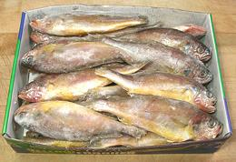

Native to the northwestern Pacific, particularly the Yellow and East China seas, this fish is highly prized among Asians in Los Angeles, especially the Koreans. In Korean markets they are sold frozen, dried, salted cooked and sometimes fresh, usually in lengths less than 12 inches. They are often called "Corvina" (Spanish for croaker) or "Yellow Corvina" to avoid confusion with the other fish called Yellow Croaker. This is the only fish allowed the name "Yellow Croaker" on Fishbase. They are easy to tell apart. This one has a round face, the other has a pointy face. The photo specimen, purchased from a Los Angeles market serving mostly Vietnamese and Chinese, was 13-1/4 inches long and weighed 1 pound 2-1/2 ounces. This fish is caught wild and not considered threatened.
More on Croakers and Drums.
 This is a very good eating fish with a light, pleasant flavor. It's one drawback is the tenderness of its flesh and skin which makes handling in cooking and serving more difficult than for many other fish. For this reason many prefer small fish so each serving can be a whole fish. When eating whole or pan dressed fish, be prepared to deal with a few fine rib bones, and supply a bone bowl for the discards.
To the left is a box of 27 small Corvina as sold in the Asian markets.
These fish are about 7 inches long and weigh about 2.3 ounces each. They are
much less of a problem to eat than most small fish because the top fin pulls
out easily and there are relatively few bones. These small fish can be cooked
by any of the methods for larger fish, but I like them best dusted with
salted rice flour and pan fried, or deep fried (no rice flour needed). For
these small fish no cuts through the skin are needed for any of the cooking
methods listed below. Six of these per person makes a decent meal.
Cleaning: The scales are medium size and scrape off quite easily with little flying about. Cleaning offers no particular problems and the gills pull out fairly easily. There are a lot of internal membranes but they pull out easily too. You will notice thin layers of body fat on the inside walls of the belly. They will peel off easily but should be left in place for any method of cooking
Cleaning (very small fish): The scales scrape off very easily with no flying about at all. Cleaning offers no particular problem except you will need to use your long nose pliers to pull out the gills and for some of the other innards because they're just too small to grasp. Of course these fish are used whole or pan dressed as filleting and skinning is just not practical with a 7 inch fish.
Filleting: Filleting must be done with care because the bones are short and not easy to follow and because the flesh is very tender and breaks apart easily. When you get to the rib cage, you will find it impossible to follow it with the knife. The ribs are very fine and there are few of them. Just cut them from the backbone with kitchen shears and deal with them in the fillet. Use your long nose pliers to pull them out, pulling sharply forward because they are raked back. There are only a couple of centerline spines worth dealing with.
Skin: Fillets are not easy to skin because the skin is thin and not strong, but it can be done with care. The skin shrinks moderately but not strongly when cooked. It does not have a strong or undesirable flavor. To skin, use the standard long knife and cutting board Method.
Yield A 13 inch 1 pound 2-1/2 ounce fish yielded 9-5/8 ounces of fillet skin-on (52%). Skinned that was 8-3/8 ounces (45%).
Cooking: This fish can be cooked by a number of methods, but each needs special care because of the tenderness of the flesh.
Stock: Heads, fins, bones and skins make a serviceable light-medium fish stock with very little oil, but remove what there is with your gravy separator. See our recipe Making Fish Stock for details.
sf_corviyz 060625 - www.clovegarden.com